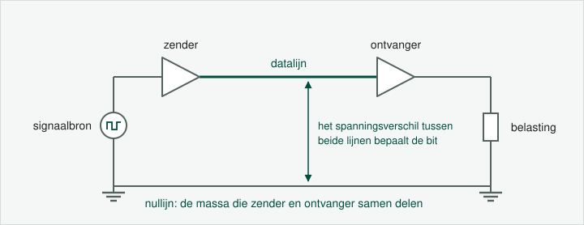
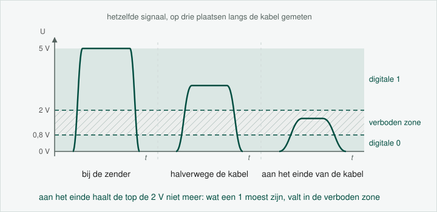

De eenvoudigste transmissiemethode gebruikt twee geleiders:
Datalijn: draagt het informatiesignaal
Nullijn (massa of ground): gemeenschappelijke referentie op 0 V

Single ended signaling met een datalijn en een nullijn
Het spanningsverschil tussen beide lijnen bepaalt welke data verstuurd wordt.
Bijvoorbeeld:
Digitale '0' = tussen 0 V en +0,8 V
Digitale '1' = tussen +2 V en +5 V
Tussen 0,8 V en 2 V = verboden zone (ongedefinieerd)
Cruciaal
Zender en ontvanger moeten dezelfde massa delen, anders kloppen de spanningsverschillen niet meer. We
spreken van een gemeenschappelijke massa of common ground.
Beperkingen
Single ended signaling kent enkele belangrijke beperkingen:
Afstand: hoe langer de kabel, hoe meer attenuatie (signaaldemping)
Storing: externe ruis koppelt anders in op de datalijn dan op de massalijn, en telt
zo mee in het spanningsverschil dat de ontvanger meet
Massaverschillen: over grote afstanden kunnen de twee massa's een verschillende
potentiaal krijgen

Attenuatie: hoe verder in de kabel, hoe kleiner en hoe ronder het
signaal aankomt
Alternatief: differential signaling
Voor grotere afstanden of storingsgevoelige omgevingen gebruik je differential
signaling (RS-485, CANbus…). Daar worden twee datalijnen gebruikt die tegengestelde
signalen voeren, waardoor ruis automatisch gecompenseerd wordt. Dat is de volgende pagina.